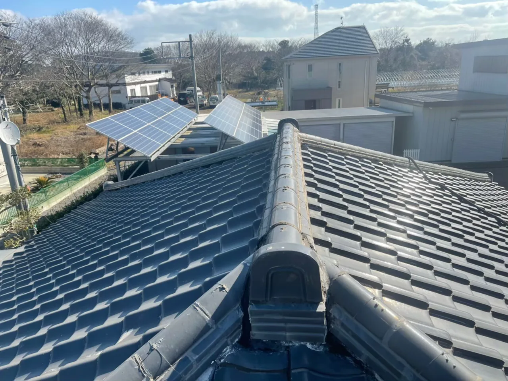
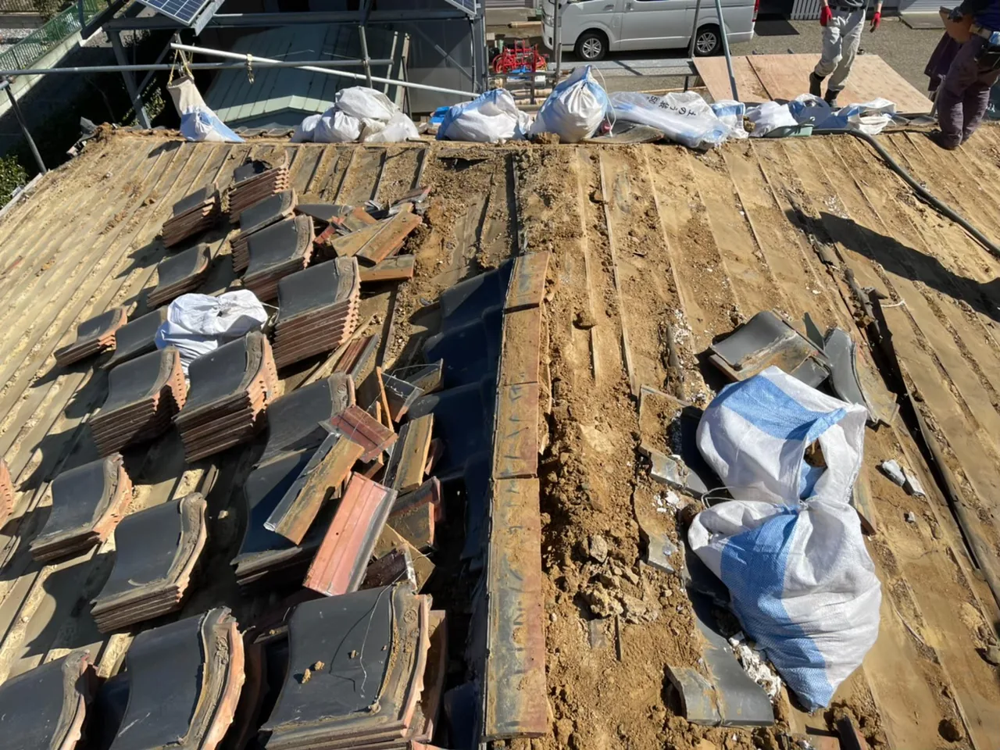
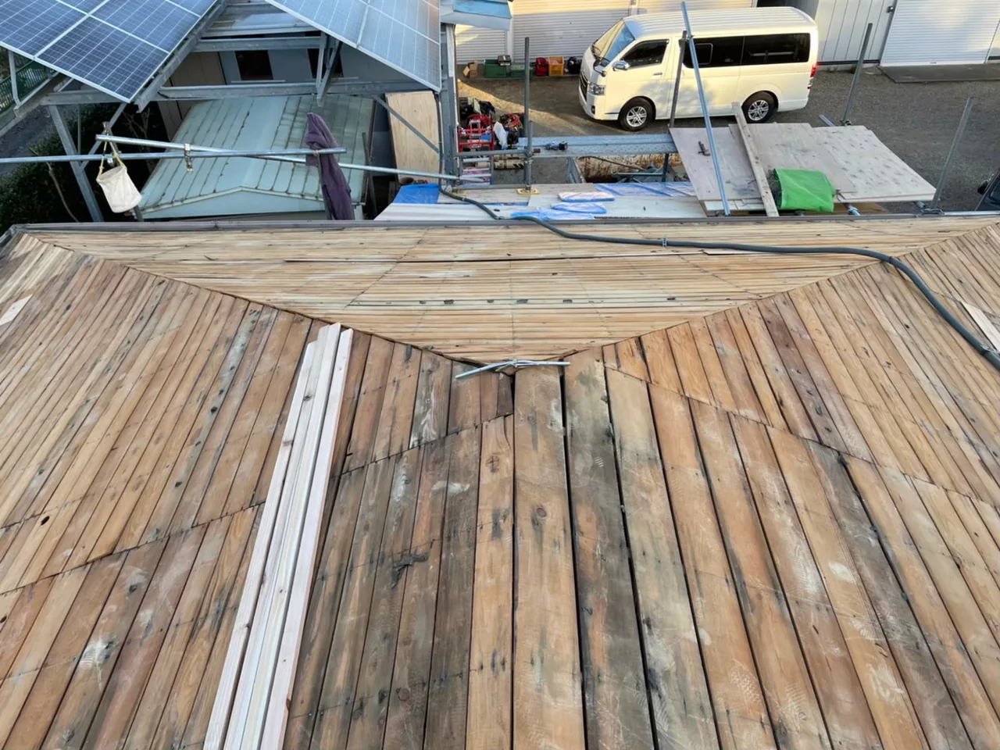
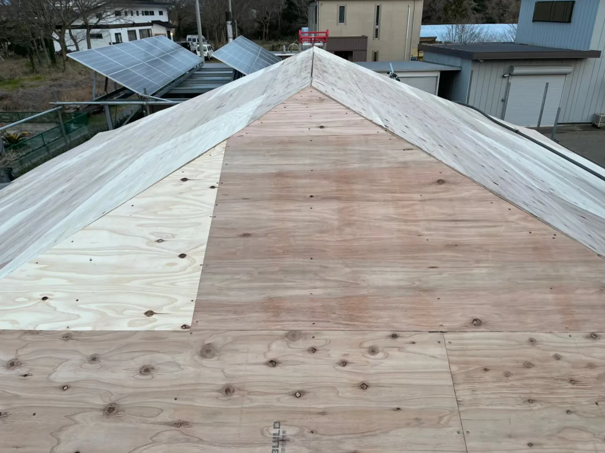
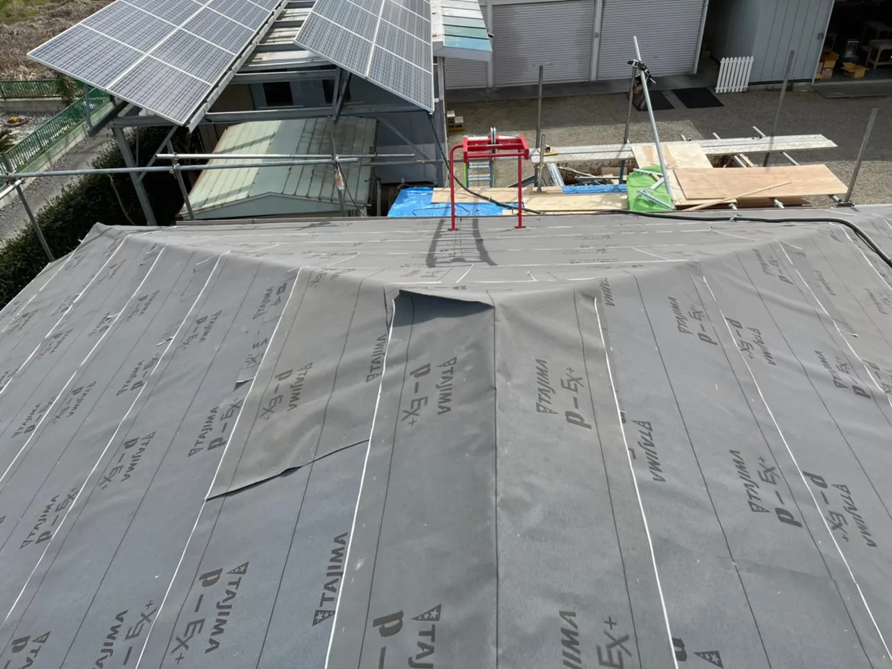
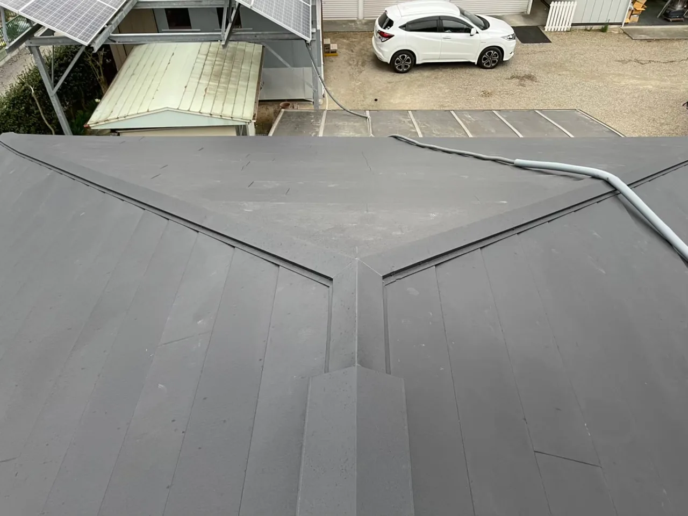
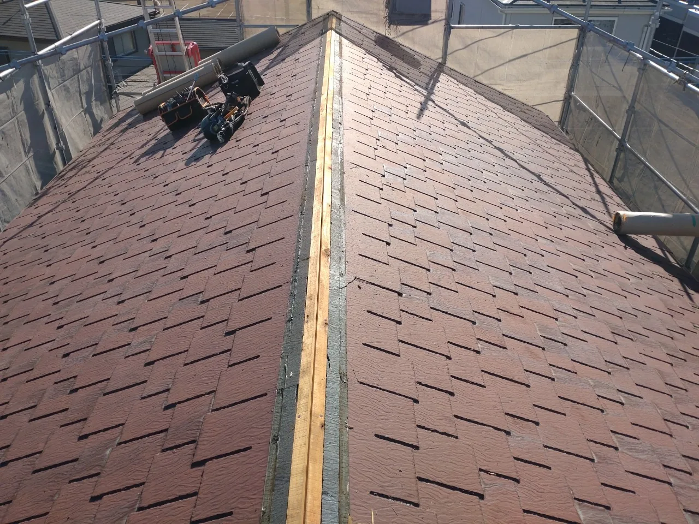
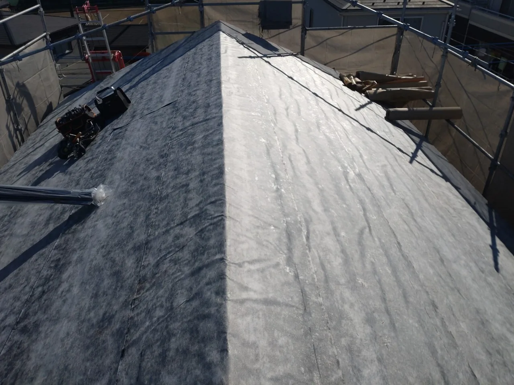
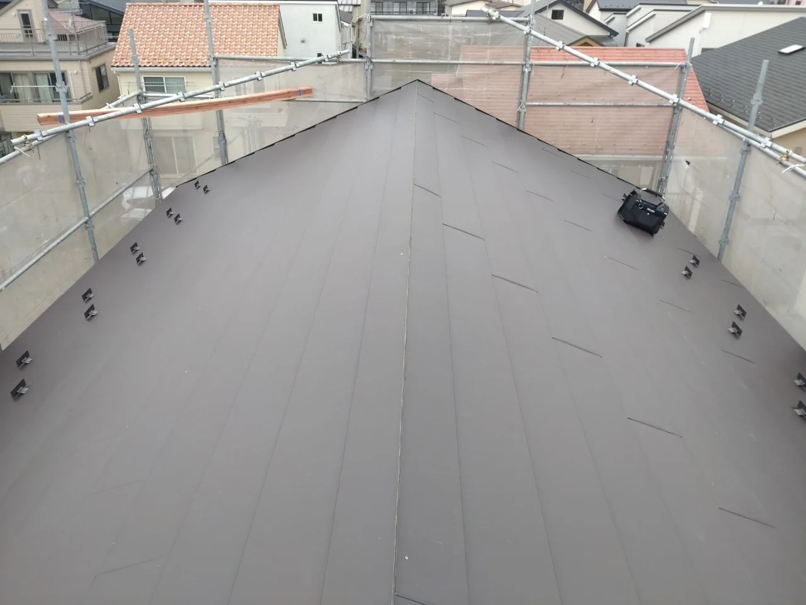

はじめに
天井や壁にシミ、クロスが浮いてくる、水滴が天井から垂れてくるなど雨漏りの症状は様々ですが、突然目の前に現れます。そして次の雨の日や台風接近が怖いのでなるべく早く対処したいものですよね。今回はどんな修理方法があるのかを記載していきます。
自力で直す
普段からDIYにこだわって建材の知識があって、工具の使用方法の知識があれば修理することも可能です。修理箇所を特定してコーキングをしたり、破損している屋根材を取り換えたりするだけで直る雨漏りもあります。ただ雨漏りがするほど劣化している屋根に登るのは大変危険ですし、雨漏り箇所もまだ表面化していない雨漏りが点々と発生している可能性もあります。プロに現地調査に来てもらった方が確実でしょう。
修理業者に依頼をする
安全に確実に直すために修理業者に直してもらいましょう。屋根の構造はかなり奥が深いので修理には知識と技術が必要です。何社かで相見積をして信頼できる業者に依頼をしましょう。修理業者の主な施工方法も紹介します
・葺き替え
既存の屋根材を撤去し、新しい屋根材を設置する工法。雨漏りをしていると屋根の下にある野地板という木材も腐敗している可能性があるので葺き替えの時に野地板から変えられるので屋根だけ新品になるイメージです。






・葺き直し
既存の屋根材を一度撤去し、雨漏りの原因を除いて再度既存の屋根材を設置する工法。屋根のデザインを一切変えたくない場合に有効な施工です。瓦屋根に多いですが、一度撤去した瓦を割らないように慎重に行う施工の為、工事日数がかかります。
・カバー工法
既存の屋根の上から、新しい屋根を設置する工法です。既存の屋根の構造や雨漏りの状態によっては施工できない場合もありますが、既存の屋根材の撤去費用が掛からず、工事日数も短くなります。



・部分補修
雨漏り・破損箇所または、その周辺のみの修理。最もコストを掛けずに修理することができます。突発的は破損に対しては有効ですが、老朽化による雨漏りの場合は他の場所も雨漏りする可能性が高いのであまりお勧めはしません。
雨漏りする前に定期メンテナンス
定期メンテナンスをせずに放置していると、本来の耐用年数より早く雨漏りしてしまい修理をしなくてはなりません。修理が屋根だけで済めばまだいいですが、天井や壁など家の中の建材まで修理が必要になってしまうかもしれません。そうなると時間も手間もコストも掛かるので定期的にメンテナンスをしましょう。
修理時にリフォームという選択
新築の時は綺麗な状態の家をキープしたいと思うものですが、長年住むと経年劣化によってその気持ちも遠のいてしまいます。定期メンテナンスを怠ってしまうのも綺麗な状態のキープを諦めてしまったことが原因です。リフォームで新築のように綺麗にすることで定期メンテナンスを心がけるきっかけになるかもしれません。フルリフォームまではしなくても、屋根の葺き替えや外壁のサイディングなどで外観は新築同然に生まれ変わります。
築年数が経ったお家をこの機会に生まれ変わらせてみてはいかがでしょうか。
最後に
屋根修理のお見積りをさせていただく中で、屋根修理の価格に不安を持たれるお客様の声を頂きます。屋根修理は決して安い工事ではないです。しかし、お家はお客様の大切な資産です。屋根修理を現状復帰工事と捉えるのではなく、原状復帰工事と捉えませんかという提案をさせていただきたいです。壊れた状態を直すのではなく、新築時の状態に直す。そんなイメージで依頼をしていただけるとご納得いただけるかと思います。
ご質問・ご相談等ございましたら、大沼商会までご連絡くださいませ。
ご清覧ありがとうございました。